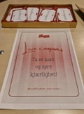

Betel Trondheim: A Portrait of a Modern Multicultural Church
From expressive worship to intimate morning prayer, Betel Trondheim offers a glimpse into how Christian community is lived in a diverse and changing religious landscape.
Betel in Trondheim is part of a growing landscape of Christian communities that reflect the increasing diversity of religious life in Norway. As the country has moved beyond a single dominant church tradition, new congregations and forms of worship have become a natural part of the city’s spiritual environment. Betel is one of these communities, shaped by both global influences and local culture.
The congregation draws on Pentecostal and charismatic traditions, but its identity is formed just as much by the people who gather there. Faith is expressed through music, prayer, shared experiences, and the relationships that develop within the church. The result is a community where belief is not only spoken, but lived.
Looking at Betel offers a glimpse into how Christianity is practiced in Trondheim today—how worship takes shape, how belonging is created, and how a modern congregation understands its place in a changing religious landscape.
"Christianity in Norway today is characterized by diversity, with a wide range of congregations, traditions and expressions of faith."
— Ingebrigt Sødal, *Kristendommen i Norge i dag* (2021)
Background and Context
Betel belongs to the Pentecostal and charismatic tradition, a branch of Christianity known for expressive worship and an emphasis on personal transformation. In Trondheim, the congregation has developed into a multicultural community where people from different backgrounds contribute to the rhythm and character of church life.
Services at Betel are informal and participatory. Music, prayer, and shared moments of reflection play a central role, and the atmosphere often shifts depending on who is present. Norwegian, Slavic, African, and international influences blend together, creating a worship style that feels both local and global.
Understanding Betel involves looking beyond doctrine and into the everyday practices that shape the community. Hospitality, shared prayer, and active involvement are central to how members experience faith and how newcomers are welcomed. These elements form the foundation of Betel’s identity and help explain its place within Trondheim’s wider religious landscape.
Community Life: The Rhythm of Gathering
Life at Betel is shaped by a steady rhythm of gathering, worship, and shared prayer. Sundays are the heart of the congregation’s weekly life, bringing together people from different backgrounds for a series of services that each carry their own atmosphere and expression of faith.
The main Sunday service draws the largest crowd, blending music, teaching, and communal worship in an informal and welcoming setting. Later in the day, the international service brings together a multilingual and multicultural group, while the Slavic gathering offers worship and teaching shaped by Slavic Christian traditions. Together, these services reflect the diversity that defines Betel’s identity.
What stands out across these gatherings is the emphasis on participation. Whether in the main service or the smaller afternoon meetings, people are encouraged to take part — through singing, praying, or simply being present with others. The atmosphere is informal and relational, shaped by the belief that community is central to spiritual life. At Betel, worship continues beyond the service itself, carried into conversations, shared moments, and the relationships formed along the way.
Worship and Atmosphere
Worship at Betel is shaped by both Pentecostal tradition and the cultural diversity of the congregation. The services are expressive and participatory, marked by music, prayer, and moments of shared reflection. Rather than following a strict liturgy, the gatherings move with a natural rhythm that reflects the people in the room.
Each service carries its own atmosphere. The main Norwegian service is relaxed and down‑to‑earth, with members arriving in everyday clothing and engaging in a style of worship that feels familiar and informal. The international service, attended by many African members, is more celebratory, with vibrant music and a sense of festivity. Later in the afternoon, the Slavic gathering takes on a more contemplative tone—what the pastor described as inderlig, with a distinctly melancholic quality that shapes the atmosphere of the service.
Across all these services, participation is central. A worship band leads the music, and the congregation responds with clapping, singing, and spoken prayer. The pastor emphasized that Betel aims to reduce the distance between leaders and attendees, creating a setting where spiritual life is shared rather than performed. This sense of closeness continues after the service, when people move into the café to talk, connect, and build relationships.
"Each service develops its own atmosphere, shaped by the people who gather and the cultures they bring with them."
— Pastor at Betel Trondheim
Morning Prayer: A More Intimate Space
While the Sunday services draw large and diverse crowds, the morning prayer meeting offers a very different window into Betel’s spiritual life. Held early in the day, it brings together a small group of regulars whose presence creates an atmosphere that is quiet, personal, and deeply participatory. When we arrived, our group of five nearly doubled the number of attendees, shifting the dynamic in a way that made the gathering feel even more intimate.
The group was multicultural: an older Norwegian woman, a Slavic man who moved fluidly between Norwegian and Russian, and another Slavic man who led the music on guitar. A few Ukrainians and an African woman joined as well. The singing, often in Slavic languages, carried a soft, melancholic tone that shaped the rhythm of the meeting. Even without understanding the lyrics, the music added a sense of emotional depth to the prayers.
The prayer topics moved between the expected and the surprising. Participants prayed for their personal relationship with Jesus, for Betel’s pastors and leaders, for other churches in Trondheim, and for countries at war. They also prayed for local political leaders and global figures, asking that they would make decisions aligned with God’s will. Moments of glossolalia appeared naturally, woven into the flow of spoken prayer and song.
Our presence did not go unnoticed. The regular attendees welcomed us warmly, and a significant portion of the meeting was devoted to praying for us—our studies, our future, and even that we might develop a personal relationship with Jesus. The hospitality was sincere, though it also reflected an evangelical impulse: care expressed through prayer, blessing, and spiritual encouragement.
"The morning prayer is small, but it carries a depth that shapes the whole week."
— Pastor at Betel Trondheim
Insights From the Pastor
In our interview with Betel’s pastor, the diversity and character of the congregation came into clearer focus. He described Betel as a community shaped by more than thirty nationalities, each contributing to the atmosphere of the services. This diversity, he explained, is not something the church set out to engineer—it emerged naturally as people from different backgrounds found a place where they felt at home.
The pastor emphasized that Betel aims to “create as little distance as possible” between leaders and attendees. This principle shapes everything from the tone of the services to the way responsibilities are shared. Leadership is understood not as a hierarchy but as a form of participation, where pastors and members stand alongside one another in worship and community life.
He also reflected on the emotional and cultural differences between the various services. The Norwegian gathering tends to be relaxed and informal, the international service more celebratory, and the Slavic service more contemplative and melancholic. Rather than seeing these differences as challenges, the pastor described them as expressions of the same faith through different cultural lenses—each adding depth to the life of the congregation.
Charismatic practices such as healing prayer and glossolalia are present at Betel, but the pastor framed them not as dramatic events but as natural parts of everyday faith for many members. His stories and reflections offered a deeper understanding of how Betel sees its mission in Trondheim: a place where people can encounter God, participate fully, and find belonging across cultural and generational lines.
"We try to create as little distance as possible between the people leading and the people attending."
— Pastor at Betel Trondheim
“Love Does”: A Seasonal Theme of Action
During our visits to Betel, one phrase appeared everywhere—on signs, in the services, and even on small cards placed near the entrance: Love Does. What at first seemed like a simple slogan turned out to be Betel’s seasonal theme for the spring. The church selects a new theme every half-year, and this season’s focus is on love expressed through concrete, everyday action.
The theme is introduced across Betel’s social media, services, and teaching. It encourages the congregation to look at Jesus as a model for lived love— love shown through compassion, service, and practical choices. Rather than treating love as an idea or emotion, the theme invites members to let it take visible form in their encounters with others.
The theme is also reflected in the physical space of the church. A large “Love Does” display stands on the stage, and red paper hearts hang from the ceiling and windows, creating a warm and welcoming atmosphere. Near the entrance, visitors can pick up “love coupons”—small cards with simple challenges that encourage acts of kindness during the week. These cards offer a tangible reminder of the theme’s intention: that love becomes real when it is practiced.



The love coupons add a practical dimension to the theme. By encouraging small acts—sending a message, helping someone, or offering encouragement—they prompt people to notice others and take initiative. In this way, “Love Does” becomes more than a slogan; it becomes a way for members to connect with people in their everyday lives.
The Holy Spirit in Betel’s Worship
At Betel, the Holy Spirit is understood as the central force that shapes both worship and everyday faith. This emphasis is visible in the expressive character of the services—through spontaneous prayer, moments of glossolalia, and the openness to healing and personal encouragement. These practices are not treated as dramatic events, but as natural expressions of a living and active faith.
The experience of speaking in tongues is often connected to the biblical description in Acts 2:4: “All of them were filled with the Holy Spirit and began to speak in other tongues as the Spirit enabled them.” Because it is not bound to any single human language, glossolalia is understood as a form of prayer that anyone can participate in—a spiritual expression that moves beyond cultural and linguistic boundaries.
In this way, the Holy Spirit becomes a connecting thread throughout Betel’s congregational life. It shapes the emotional tone of the services, supports the church’s emphasis on participation, and underlies seasonal themes like “Love Does,” where faith is expressed through concrete acts of compassion in daily life.
"Let us not love with words or speech but with actions and in truth."
1 John 3:18
Betel Beyond Sunday: Faith in Everyday Life
While Sunday services form the heart of Betel’s weekly rhythm, much of the congregation’s identity is shaped by what happens outside the main gatherings. Throughout the week, Betel hosts a range of activities that reflect its emphasis on participation, creativity, and care for different generations. These initiatives show how the church’s values extend beyond worship and into the everyday lives of its members.
One example is Betel School, an alternative learning environment where children and young people receive academic support alongside opportunities for personal growth. The school reflects the congregation’s belief that education and faith can reinforce one another, offering a space where students are encouraged to develop both confidence and character.
Creativity also plays a significant role in Betel’s weekly life. The church hosts music and arts activities that bring together children, teenagers, and adults. These gatherings provide a space for expression and community-building, and they highlight how artistic practice is woven into Betel’s understanding of spiritual life. Music, which is central to the Sunday services, becomes a way for people to connect throughout the week as well.
Betel’s engagement with older members of the community is another important dimension of its work. Through regular visits, shared meals, and social gatherings, the church maintains relationships with elderly individuals who may otherwise feel isolated. These activities reflect the congregation’s emphasis on care, presence, and intergenerational connection.
Taken together, these initiatives show how Betel’s mission extends far beyond the walls of the church. Whether through education, creativity, or support for older members, the congregation seeks to embody its values in practical ways. The result is a community where faith is not limited to Sunday worship, but expressed throughout the week in relationships, service, and shared life.
Conclusion
Looking at Betel offers a window into how Christianity is lived in Trondheim today. The congregation’s diversity, its expressive worship, and its emphasis on participation show how faith takes shape through relationships, shared practices, and everyday acts of care. Whether in the large Sunday gatherings, the intimate morning prayer meeting, or the activities that fill the church throughout the week, Betel presents a form of Christian community where belonging is created through presence and involvement.
What stands out most is how faith is understood not only as belief, but as something practiced. Themes like “Love Does,” the role of the Holy Spirit, and the church’s engagement beyond Sunday all point to a congregation that seeks to make spirituality tangible in daily life. In this way, Betel reflects a broader shift in Norway’s religious landscape—one where tradition meets new expressions, and where community is shaped by the people who gather, pray, and participate together.
Betel’s story is ultimately one of connection: between cultures, generations, and forms of worship. It shows how a modern congregation can hold together global influences and local identity, offering a space where faith is shared, expressed, and continually renewed.
"The church is the church only when it exists for others."
— Dietrich Bonhoeffer